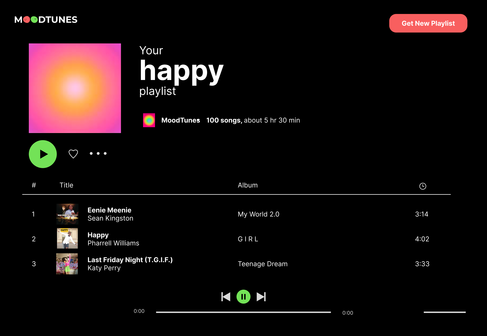
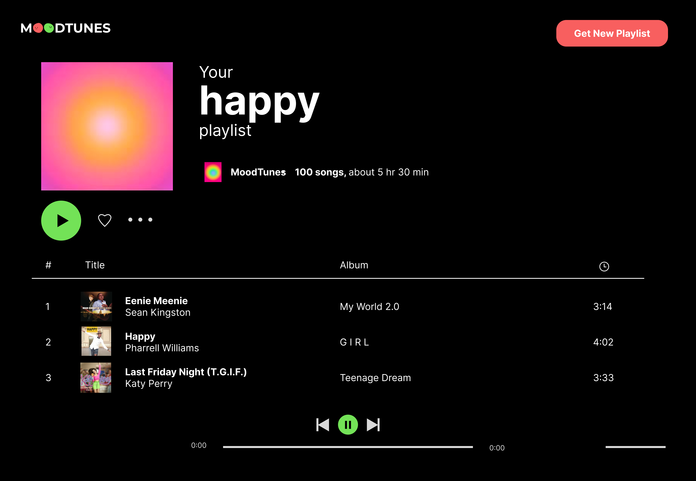

Project Type: Website design + Full stack web development
Tools Used: Figma + React.js
Timeline: 3 weeks
MoodTunes is a website where a Spotify playlist is automatically generated to fit the user’s current mood. Users can enter their mood and they will be directed to a curated playlist that they can add to their personal playlists.
Users can select one of five moods: somber, melancholy, neutral, happy, and euphoric. After selecting a mood, the user is instructed to log into Spotify. A playlist will then be generated according to the selected mood using the user’s most-listened songs and artists.
Utilizing a Spotify API that takes the user’s most-listened songs and artists, the songs are ranked on their valence, or their “positivity.” Higher valence songs are given a score closer to 1.0 while lower valence songs are given a score closer to 0.0. The five mood inputs correspond to valence scores of 0.1, 0.3, 0.5, 0.7, and 0.9 respectively.
Then, a playlist is created with songs corresponding to the selected mood and songs along with several recommended tracks. The user will then be able to save the generated playlist to their Spotify library.
For the interface, I decided to create a minimalist and bold design with bright colors. I created different faces with organic shapes to create a fun, playful design. The faces also provide a visual representation of the different mood levels. I also utilized these faces in the MoodTunes logo to integrate the logo into a memorable brand identity.
 
